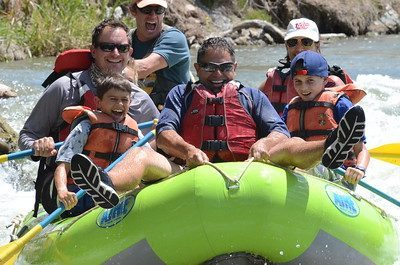

The purpose of this website is to provide a platform where I can share my personal interest in whitewater rafting, as well as become established as an emerging business in the industry. Our goal for this business is to connect with customers over the internet for them to be able to view and purchase my products and services, as well as provide you with the convenience of ordering my products and services anywhere at anytime. With the addition of this website, it will be easier than ever to satisfy and fulfill all of your whitewater rafting questions or needs.
More Information
The best Whitewater Rafting in Colorado, White Water Rafting Company offers rafting on the Colorado and Roaring Fork Rivers in Glenwood Springs. Since 1974, we have been family owned and operated, rafting the Shoshone section of Glenwood Canyon and beyond. Trips vary from mild and great for families, to trips exclusively for physically fit and experienced rafters. No matter what type of river adventures you are seeking, White Water Rafting Company can make it happen for you.

Audience
My target audience is necessarily a particular age group, but a group of people that share the same passion for whitewater rafting that we do or are looking to get into this amazing activity. Although we believe that whitewater rafting is a thrilling activity that can be enjoyed but all, we do recognize certain age limitations that need to be set to ensure the safety of our customers. Our whitewater rafting services are recommended for anyone between the ages of 10 and 65, but individuals younger or older than this limit can participate as well but need to take extra precautions. Another thing to note is our location, which is on the Fork River in Glenwood Springs, Colorado. This means that if you live within a 100-mile radius, it is easier for you to make a daytrip out of this great activity and make memories with Dry Oar. Anyone who is located outside of our 100-mile radius will likely have to plan your trip in advance, which is where this website comes in. By clicking the “Book Now” button on this page or the home page, you can schedule a time to come and do whitewater rafting with up to as many people as you choose to accompany you. A group discount will be made available if there is over 10 people, and all other purchasing details will be located within that “Book Now” button. If you would like to know more information about our company, you can click on the “Contact Us” tab on the header and you can send us an email or call us to get any addition questions that you may have answered.